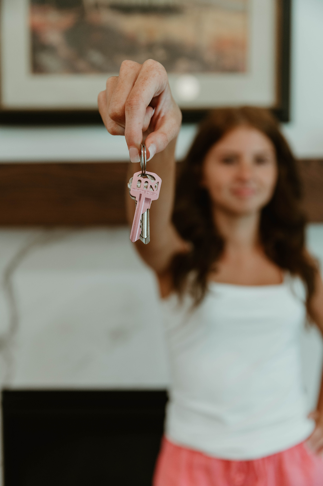
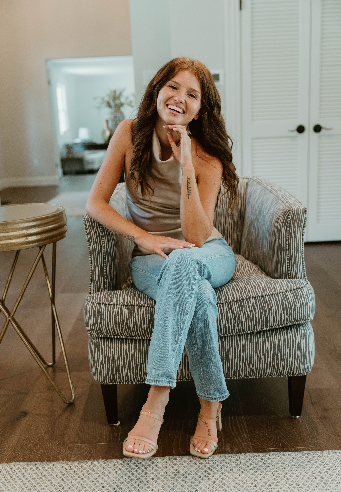
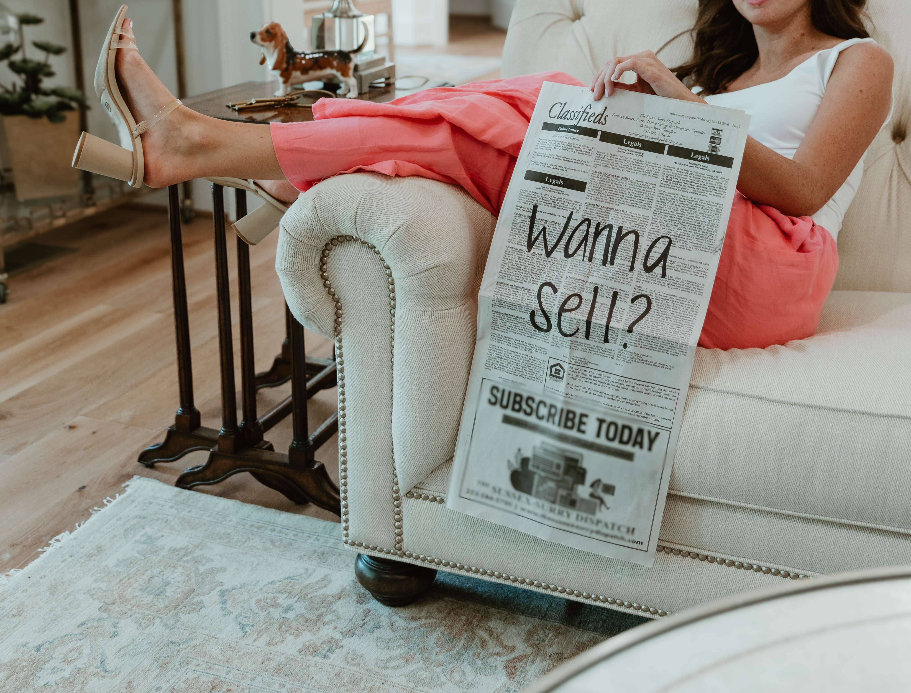
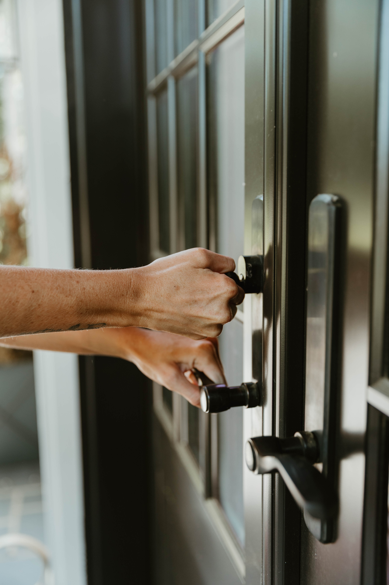
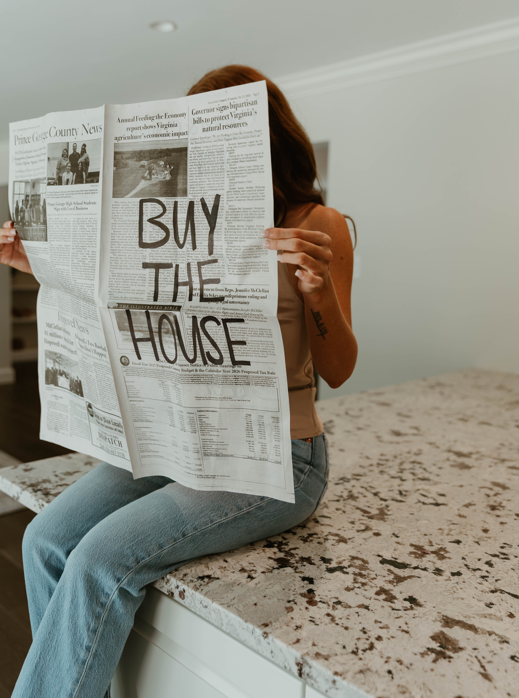

"Whatever you do, work at it with all your heart, as working for the Lord." -Colossians 3:23
Your brand is more than a logo-it's a story, passion, and purpose behind your business.
These sessions are designed to create authentic, professional images that showcase who you are and help you connect with your ideal clients. We'll create images that reflect your personality, your process, and the heart of what you do.
Because your story deserves to be seen and your brand deserves imagery that reflects the excellence of what you've been called to create.
Back to Portfolio




© 2026 Grace & Olive Lens